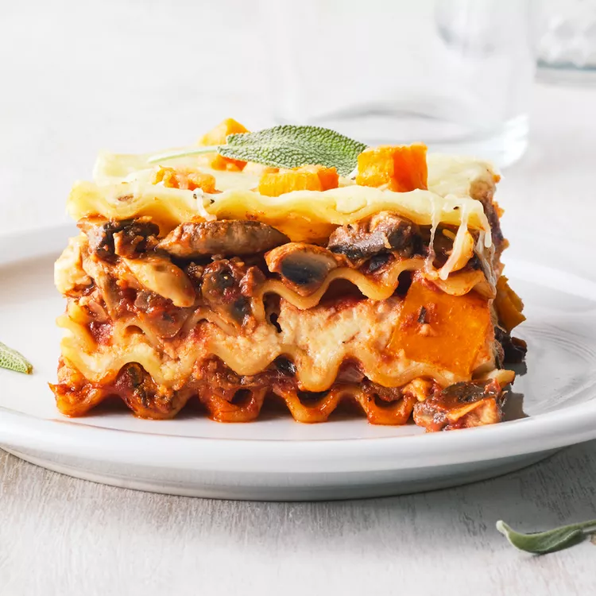

Veggie lasagna

Description
This veggie lasagna is a satisfying meatless meal packed with butternut squash, mushrooms, tomatoes, and reduced-fat Italian cheeses.
- 12 lasagna noodles
- 1 tablespoon olive oil
- 2 pounds button mushrooms, chopped
- 1 cup chopped onion
- 2 cloves garlic, minced
- 1 teaspoon Italian seasoning, crushed
- 2 (8 ounce) cans no-salt-added tomato sauce
- 1 (14.5 ounce) can no-salt-added diced tomatoes with juices
- 3 tablespoons balsamic vinegar
- 1 teaspoon salt, divided
- ¼ crushed red pepper
- 1 (15 ounce) container part-skim ricotta cheese
- 1 egg, lightly beaten
- 2 teaspoons chopped fresh rosemary
- ½ teaspoon black pepper
- cooking spray
- 2 cups shredded part-skim Italian cheese blend
- 2 (10 ounce) packages frozen diced butternut squash, thawed
- 12 fresh sage leaves (Optional)
- Bring a large pot of lightly salted water to a boil. Cook lasagna noodles in the boiling water, stirring occasionally, until tender yet firm to the bite, about 8 minutes. Drain and transfer to paper towels; blot dry.
- Heat oil in a large skillet over medium heat. Add mushrooms, onion, garlic, and Italian seasoning. Cook, stirring, until mushrooms are tender and any excess moisture has evaporated, about 15 minutes. Add tomato sauce, tomatoes, vinegar, 1/2 teaspoon salt, and crushed red pepper. Bring to a boil, then reduce heat and simmer, uncovered, about 8 minutes.
- Preheat the oven to 375 degrees F (190 degrees C).
- Stir together ricotta, egg, rosemary, black pepper, and remaining 1/2 teaspoon salt in a bowl.
- Coat a 9x13-inch baking dish with cooking spray, then spread with 3/4 cup mushroom mixture. Layer on 3 noodles, half of the remaining mushroom mixture, and 2/3 cup shredded cheese. Repeat with 3 noodles, half of the ricotta mixture, and half of the squash. Then top with 3 noodles, remaining mushroom mixture, and 2/3 cup shredded cheese. Add remaining 3 noodles and remaining squash. Sprinkle with remaining 2/3 cup shredded cheese.
- Bake, uncovered, until hot and bubbly, about 30 minutes. Let cool for 10 minutes. Slice into 12 pieces. Top with fresh sage leaves.